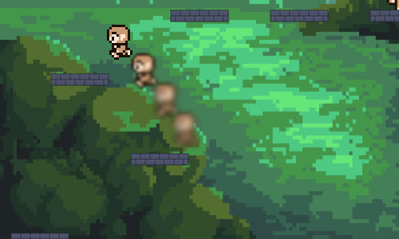
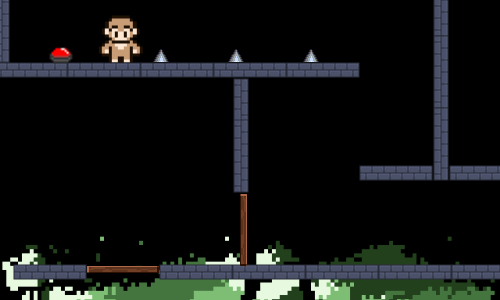
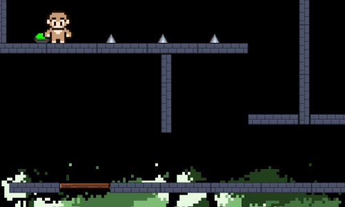
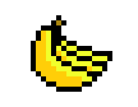

The goal of Monkey Jump is to collect the bananas, but there are obstacles that you must avoid in order to do so. The controls are simple, to move around you can use the arrow keys, WASD and the spacebar. You will find buttons around the map, when you touch them they will make a wooden platform disappear so then it will unlock a new area and you will get closer to the goal(green is activated and red is unactivated). By touching the banana you automatically move onto the next level, if there are no more levels you will be put back to the mainscreen. With all this in mind, you only have 3 lives, if you fall off a platform or touch a spike you will lose a life and get sent back to the start. If you lose all 3 of your lives the game ends.    